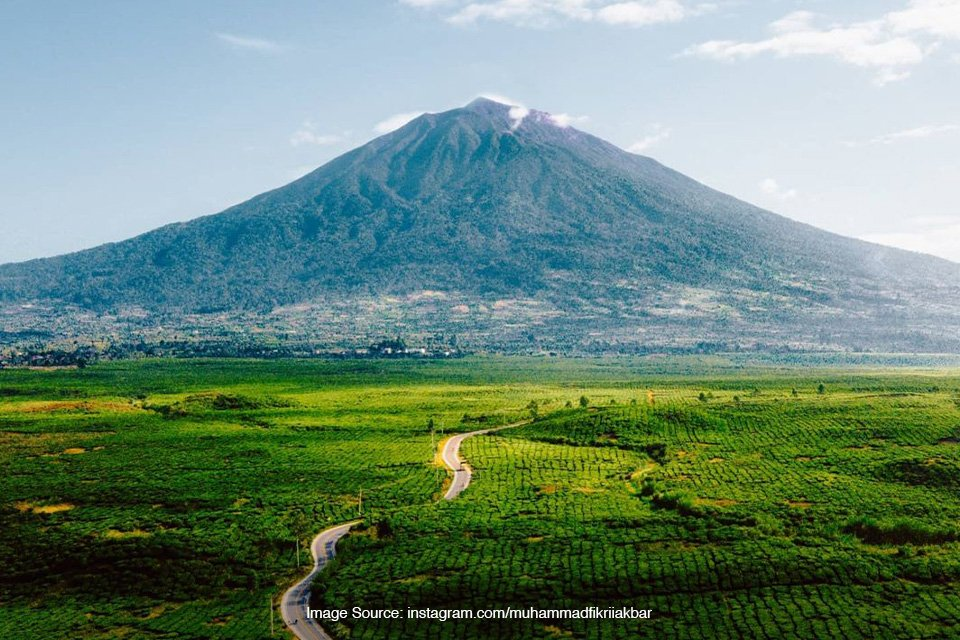
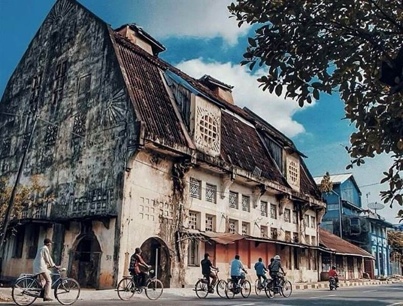
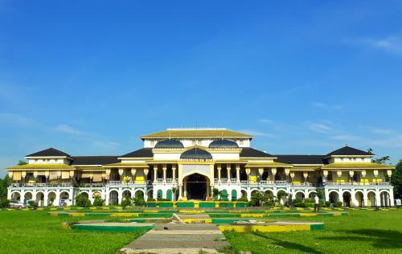
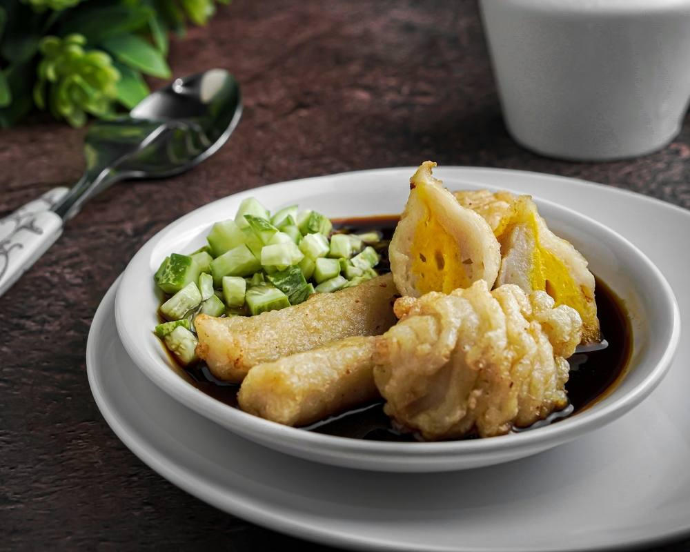
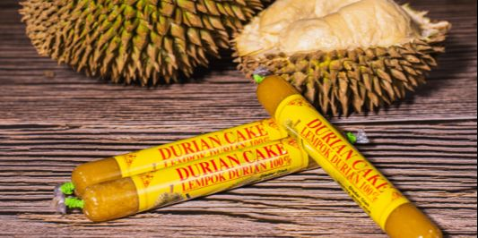

Tentang Pulau Sumatera
Pulau Sumatera adalah pulau terbesar keenam di dunia, membentang dari utara ke selatan, dan dikenal karena kekayaan alamnya yang fantastis, mulai dari hutan hujan tropis yang lebat hingga jajaran pegunungan Bukit Barisan. Pulau ini merupakan pusat keanekaragaman hayati, termasuk habitat alami bagi gajah, harimau, badak, dan orangutan. Sumatera juga menyimpan sejarah panjang kerajaan-kerajaan besar dan kaya akan budaya multi-etnis, seperti Suku Batak, Minangkabau, Melayu, dan Aceh.
✨ Mengapa Memilih Sumatera?
Sumatera menawarkan petualangan alam yang intens. Anda dapat mendaki gunung berapi, menjelajahi hutan yang merupakan paru-paru dunia, atau menyelami kisah-kisah di balik danau vulkanik terbesar. Destinasi seperti **Danau Toba**, yang terbentuk dari letusan supervolcano, menawarkan panorama alam yang tak tertandingi sekaligus kebudayaan Batak yang unik. Di sisi lain, Sumatera Barat dengan budaya **Minangkabau** yang matriarkal serta arsitektur **Rumah Gadang**-nya yang khas, menawarkan pengalaman budaya dan kuliner yang mendalam. Pulau ini sangat cocok bagi wisatawan yang mencari kombinasi antara petualangan di alam liar dan penjelajahan warisan budaya yang kaya.
🗺️ Destinasi Unggulan
Danau Toba (Sumatera Utara)

Danau vulkanik terbesar di dunia yang dikelilingi perbukitan hijau. Di tengahnya terdapat Pulau Samosir, pusat kebudayaan Batak Toba yang kental dengan sejarah.
Taman Nasional Gunung Leuser (Aceh & Sumut)

Situs Warisan Dunia UNESCO. Kawasan hutan hujan tropis ini adalah habitat penting bagi empat satwa ikonik: Harimau Sumatera, Badak Sumatera, Gajah Sumatera, dan Orangutan Sumatera.
Lembah Harau (Sumatera Barat)

Lembah curam yang dikelilingi tebing-tebing granit setinggi 100-500 meter, menawarkan pemandangan alam yang dramatis dengan air terjun dan sawah yang hijau.
Pulau Weh (Sabang,Aceh)

Pulau terluar di ujung barat Indonesia, tempat Monumen Nol Kilometer berdiri. Terkenal dengan keindahan bawah lautnya, cocok untuk selam dan *snorkeling*.
Gunung Kerinci (Jambi & Sumbar)
Gunung berapi tertinggi di Indonesia. Terletak di Taman Nasional Kerinci Seblat, gunung ini menawarkan jalur pendakian yang menantang dengan pemandangan pegunungan yang spektakuler.
Kota Tua Padang (Sumatera Barat)
Kawasan dengan arsitektur peninggalan kolonial Belanda yang khas. Menawarkan wisata sejarah dan kuliner di tepi Sungai Batang Arau.
Air Terjun Sipiso-piso (Sumatera Utara)

Air terjun setinggi 120 meter ini menawarkan pemandangan spektakuler dari tebing di tepi Danau Toba. Tempat ini sangat cocok untuk pecinta fotografi dan alam.
Istana Maimun (Medan, Sumatera Utara)
Bangunan peninggalan Kesultanan Deli ini memadukan arsitektur Melayu, Islam, dan Eropa. Istana ini kini menjadi objek wisata budaya dengan koleksi benda-benda kerajaan.
Pulau Belitung (Kepulauan Bangka Belitung)

Pulau ini terkenal karena pantainya yang berpasir putih dengan batu granit raksasa. Film Laskar Pelangi turut mengangkat popularitas Belitung sebagai destinasi wisata nasional.
Makanan Khas Pulau Sumatera
-
1. Rendang (Sumatera Barat)

Masakan daging sapi yang dimasak perlahan dalam santan dan bumbu kaya rempah selama berjam-jam hingga kering. Dinobatkan sebagai salah satu makanan terlezat di dunia.
-
2. Pempek (Sumatera Selatan)
Makanan yang terbuat dari olahan daging ikan dan tepung sagu, disajikan dengan kuah cuka (cuko) berwarna coklat kehitaman yang pedas, manis, dan asam.
-
3. Mie Aceh (Aceh)

Mie tebal kuning yang dimasak dengan bumbu rempah yang kuat, disajikan dengan irisan daging (sapi/kepiting/udang), dan kuah pedas yang kental.
-
4. Bika Ambon (Sumatera Utara)

Kue khas dengan tekstur berserat, legit, dan aroma khas dari santan dan air nira. Meskipun namanya Ambon, kue ini sangat populer dan berasal dari Medan.
-
5. Sate Padang (Sumatera Barat)

Sate daging dengan kuah kental berwarna kuning khas Minang.
-
6. Lempok Durian (Lampung)
Dodol durian khas Lampung yang legit dan wangi.
📸 Galeri Foto Sumatera